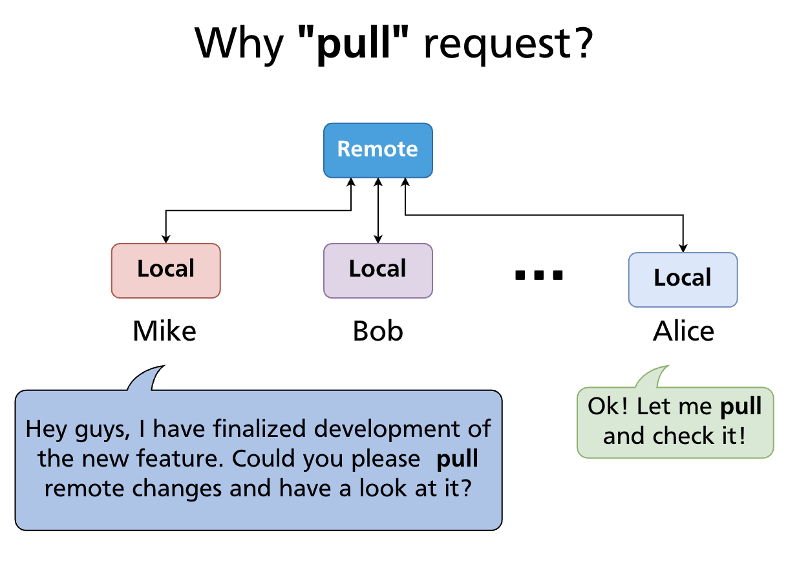
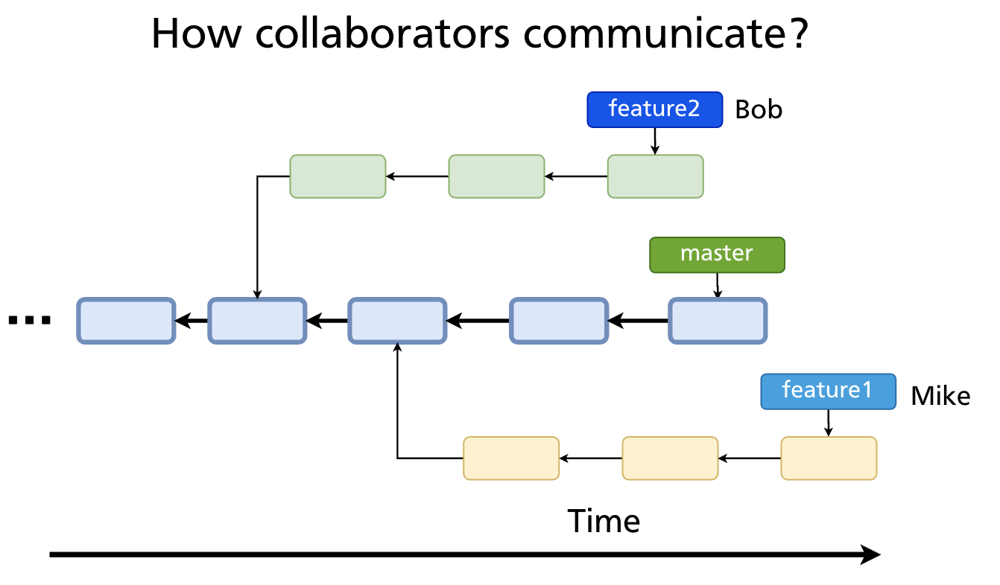
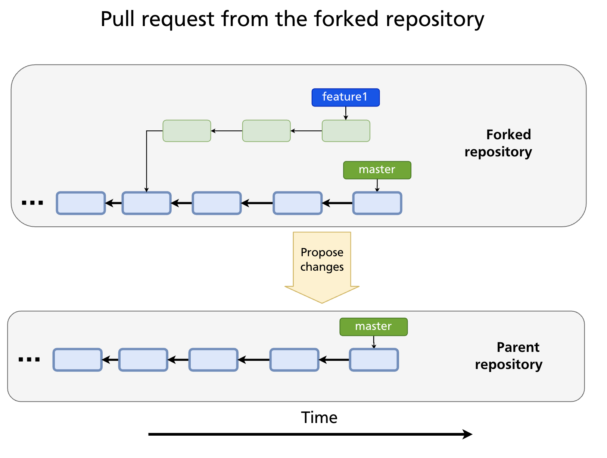
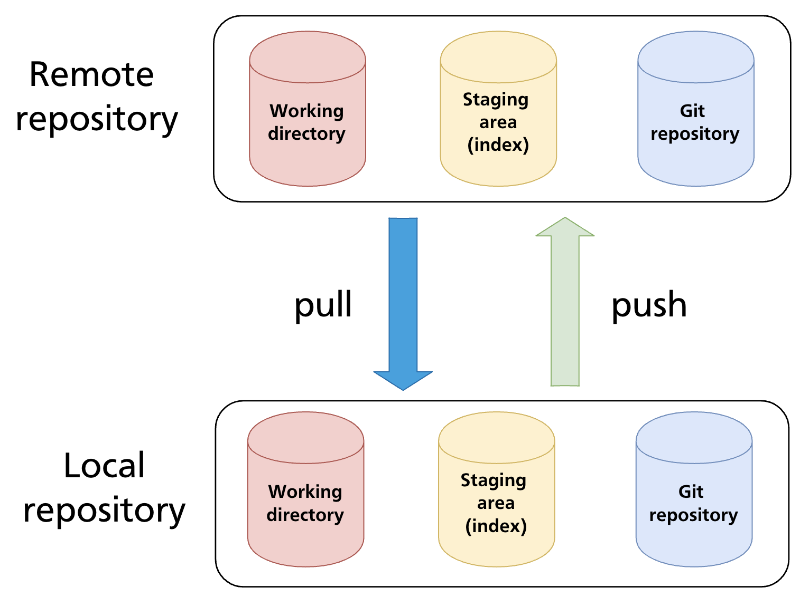
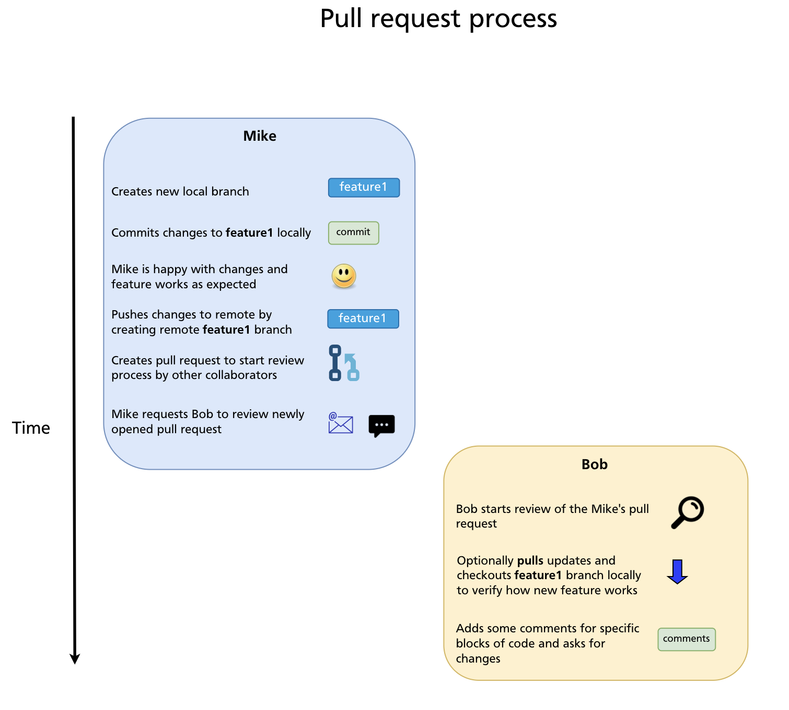
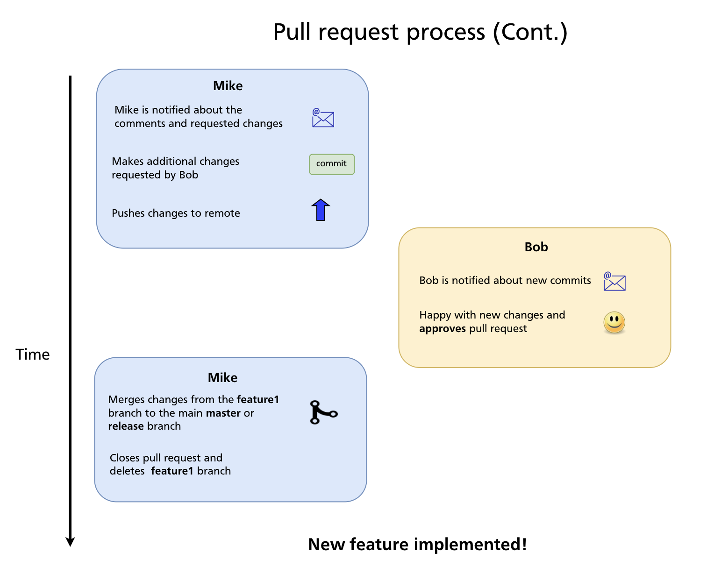

Chapter 20 — Pull Requests
A pull request (PR) is a GitHub feature that lets you propose changes and ask maintainers or teammates to review and merge them. It is not a Git concept — there is no git pull-request command — but it is the central collaboration mechanism on GitHub and similar platforms, and understanding how to use it well is as important as any Git command.
Why "Pull" Request?
The name comes from the action you're requesting: you're asking the repository owner to pull your changes into their branch.

In the open-source model (Chapter 19), you can't push directly to the upstream repository. Instead, you push to your fork and then open a pull request — a formal request saying "please pull these commits from my branch into yours."
How Collaborators Use Pull Requests
Pull requests are the primary way collaborators communicate about proposed code changes on GitHub. Rather than committing directly to main, contributors push work to a separate branch and open a PR. This gives the team a structured place to:

- See a diff of exactly what would change
- Discuss the approach before it lands in the main branch
- Leave line-by-line code review comments
- Run automated checks (CI/CD)
- Approve the change formally before it is merged
Two PR Models
Within the same repository (team workflow)
For teams with direct access to a repository, the workflow is:
- Create a feature branch from
main - Push the branch to
origin - Open a PR from
feature-branch→main - Get review and approval from teammates
- Merge the PR
This is the standard workflow for private repositories and teams.
From a fork (open-source workflow)
For contributors who don't have push access to the original repository:

- Fork the repository
- Clone the fork
- Create a feature branch
- Push to the fork
- Open a PR from
your-fork:feature-branch→original-repo:main
The fork-based workflow is covered in detail in Chapter 19. From the reviewer's perspective, both models look identical — a PR is a PR regardless of whether the source branch lives in the same repo or a fork.
Opening a Pull Request
Via the GitHub UI
After pushing a branch, GitHub displays a yellow banner: "Your recently pushed branch — Compare & pull request." Click it, or go to the repository's Pull requests tab and click New pull request.
Select the base branch (where changes will land, e.g. main) and the compare branch (your feature branch). GitHub shows a diff of all commits and file changes.

Fill in the PR form:
| Field | Purpose |
|---|---|
| Title | Short summary of the change (imperative mood: "Add login timeout", not "Added") |
| Description | What changed, why, how to test it; link related issues with Closes #123 |
| Reviewers | Team members you want to review the PR |
| Assignees | Who is responsible for the PR (usually the author) |
| Labels | Categorise the PR (bug, enhancement, documentation, etc.) |
| Milestone | Associate with a release or sprint goal |
| Draft | Mark as a draft to signal the PR is not ready for review yet |
Via the GitHub CLI
Closing issues automatically
If your PR description contains any of the following keywords followed by an issue number, GitHub closes the issue automatically when the PR is merged:
The Review Process
Requesting and performing a review
Add reviewers when opening the PR (or afterwards under the Reviewers sidebar). Reviewers receive a notification and can:
- Leave general comments on the PR
- Leave line comments on specific lines of the diff
- Start a review that accumulates multiple comments, then submit it as one of three outcomes:
- Approve — the changes look good; ready to merge
- Request changes — changes are required before merging
- Comment — feedback without a formal approve/reject
Responding to review comments
PR authors receive notifications for each comment. The standard flow:
- Read the comment and understand the feedback
- Make the change locally (or explain in the thread why you disagree)
- Commit the fix to the same branch and push — the PR updates automatically
- Mark the conversation as Resolved when addressed
Viewing the PR locally
To check out a PR's branch locally for testing:
CI Checks
Most repositories configure CI/CD pipelines (GitHub Actions, or external services) that run automatically on every PR. Common checks include:
- Unit and integration tests
- Linting and formatting
- Type checking
- Security scanning
- Build verification
A PR with failing checks is marked with a red ✗. Most teams configure branch protection rules (Chapter 21) to prevent merging until all required checks pass.
Merge Options
When a PR is approved and checks pass, GitHub offers three merge strategies:


| Strategy | What it does | When to use |
|---|---|---|
| Merge commit | Creates a merge commit with two parents; preserves full branch history | Teams that want a record of every branch in history |
| Squash and merge | Combines all PR commits into a single commit on the base branch | Keeps main history clean; good for branches with many small/messy commits |
| Rebase and merge | Replays each PR commit individually on top of the base branch; no merge commit | Teams preferring linear history without a single squash |
The right choice depends on team preference and is often enforced by repository settings. Squash and merge is popular for feature branches; rebase and merge for clean, single-commit PRs.
After merging
GitHub offers to delete the merged branch — accept this to keep the repository tidy. If the PR referenced an issue with Closes #N, the issue is closed automatically.
Locally, clean up:
git switch main
git pull # bring down the merged commits
git branch -d feature-auth # delete the local feature branch
Draft Pull Requests
A draft PR signals that the branch is still in progress and not ready for review. It is visible to the team (useful for early feedback, sharing progress, or running CI) but GitHub prevents accidental merging.
Convert to ready for review when done:
Or click Ready for review in the GitHub UI.
Updating a PR
If the base branch (main) has advanced since you opened the PR, GitHub may show a warning that the branch is out of date. Two ways to update:
Update with merge (GitHub UI button — creates a merge commit):
Update with rebase (cleaner, preferred for linear history):
Always use --force-with-lease when force-pushing to a PR branch — it refuses the push if a collaborator has added commits to your branch since you last fetched.
Closing a PR Without Merging
To reject a PR without merging it, use the Close pull request button at the bottom of the PR page. The branch is not deleted automatically. Use this when:
- The approach was superseded by a different PR
- The feature is no longer needed
- You want to start over with a cleaner branch
You can always reopen a closed PR.
Summary
- A pull request is a GitHub feature for proposing changes and requesting review; it is not a Git command.
- The two models: branch-to-branch within a repo (team workflow) and fork-to-upstream (open-source workflow).
- A good PR has a clear title, a description that explains the why, and links any related issues with
Closes #N. - Reviews can Approve, Request changes, or Comment; address feedback by pushing new commits to the same branch.
- Three merge strategies: merge commit (preserves history), squash and merge (clean single commit), rebase and merge (linear, no merge commit).
- After merging, delete the remote branch and pull locally:
git pull+git branch -d. - Draft PRs signal work-in-progress; convert to ready when reviewable.
- Use
git push --force-with-leasewhen rebasing and force-pushing a PR branch.
Previous: Chapter 19 — Forks & Contributing to Open Source · Next: Chapter 21 — Branch Protection & Code Review Workflows